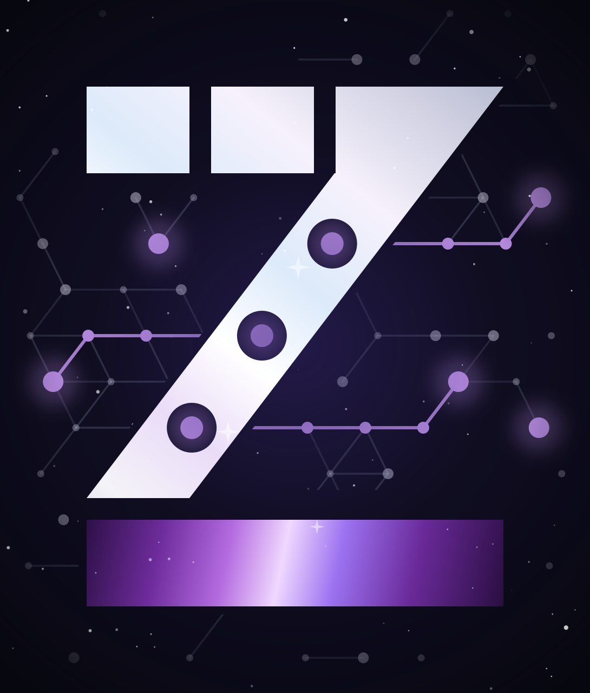

Cada eslabón de su cadena de suministro, medido.
Empezamos por el centro de distribución, donde se cruza toda la cadena: patio y muelle en 90 días. Planificar, ordenar, abastecer, transformar, entregar, retornar y orquestar, en minutos y pesos, CD por CD y en toda la red: conectamos lo que ya tiene, construimos lo que falta y le incorporamos IA.
Construido por quien viene de la operación.
Alber Mauricio Márquez Gutiérrez, fundador: más de diez años en reparto, patio, muelle y carretera, y plataformas de datos construidas para centros de distribución. Quien le vende el diagnóstico es quien mide y quien construye.
Lo que pasa entre la portería y el muelle casi nunca se mide.
Camiones que esperan en el patio y nadie sabe cuánto.
Muelles que cargan sin que nadie mida el minuto.
Novedades que se discuten sin una foto que las pruebe.
Así se transforman los datos de un turno de patio.
Baje despacio. La planilla de Excel que hoy se llena a mano se ordena, cada camión se vuelve un punto en el tablero y al final el asistente responde con la causa.
- 1Así llega hoy
Una planilla por turno, llenada a mano: horas en cinco formatos, el muelle escrito de cinco maneras, filas repetidas. Nadie puede sumarla sin rehacerla.
- 2La ordenamos
Unificamos cada campo, quitamos lo repetido y completamos lo que falta con lo que registra la portería. Nadie tiene que cambiar su forma de trabajar el primer día.
- 3Se vuelve tablero
Cada fila es un camión y cada camión es un punto: minutos en patio por muelle, contra la meta. Lo que era una hoja se lee de un vistazo.
- 4Le pregunta a sus datos
El asistente busca, interpreta y le responde con el dato y la causa. Usted decide con el porqué a la vista.
Porque el muelle 3 recibió 5 de los 6 camiones que llegaron sin cita.
Esos esperaron 48 min en promedio; con cita, la espera fue de 14 min.
Sugerencia: enturnar los camiones sin cita al muelle 4, el más libre del turno (9 min).
Fuente: planilla del turno · 15 camiones · 06:40 a 09:41
¿Su operación también vive en una planilla así? Tráigala al diagnóstico y la convertimos en su primer tablero.
Agendar el diagnósticoSi existe, lo conectamos. Si no existe, lo construimos.
No le pedimos que cambie de sistema. Lo que ya tiene se conecta a un mismo modelo de datos, lo que vive en papel o en WhatsApp se digitaliza y lo que falta se construye a su medida.
- Planillas de Excel
- Grupos de WhatsApp
- ERP
- WMS
- Rastreo GPS
- Cámara en portería
- Lo que aún no existelo construimos

Un mismo modelo de datos para todos sus centros de distribución- Tableros para decidir
- Alertas por WhatsApp
- Asistente de IA
- Informes con resultado firmado
Cinco líneas, una sola promesa: nada sin métrica.
Transformación digital con pruebas: el diagnóstico abre la puerta, los módulos son el producto, el software a la medida conecta lo que existe y construye lo que falta, la inteligencia de negocio convierte sus datos en decisiones y los asistentes de IA buscan, interpretan e informan sobre ellos. Todo con acompañamiento hasta producción y soporte técnico.
Diagnóstico de operación
Cuatro semanas, línea base con el módulo en modo captura y caso de negocio con sus costos.
COP 9 a 12 M → 02 · ProductoMódulos ZAMP7
Patio, cargue, torre de control y flota; luego inventario y corredor. Piloto de 90 días y suscripción.
Piloto desde COP 30 M → 03 · Construir o conectarSoftware a la medida
Digitalizamos lo que vive en papel, Excel o WhatsApp: si su sistema existe, lo conectamos; si no, lo construimos. Hasta producción, con soporte.
Por fases → 04 · Datos para decidirInteligencia de negocio
Si ya tiene los datos y el modelo, los convertimos en tableros para decidir con datos. Gobierno de datos y nube.
Por proyecto → 05 · IA en sus sistemasAsistentes de IA
IA activa en sus plataformas, conectada por API: busca datos, los interpreta y arma informes sobre la información de sus sistemas.
Por proyecto →Para flotas de distribuciónPara operadores logísticosPara el abastecimiento de materia prima
El 7 es la cadena de suministro completa, medida desde el centro de distribución.
Los siete procesos de la cadena, según un modelo de referencia internacional de procesos de cadena de suministro, con el mismo modelo de datos en todos los CD para compararlos. Empezamos por tres: entregar (patio, muelle y flota), abastecer en el muelle de recibo y orquestar con la torre de control. Los otros cuatro se anuncian solo cuando existan.
Ver la arquitectura de los siete procesos
Portería y patio
Enturnamiento, citas y registro fotográfico. Mide minutos en patio por camión.
Módulo · 05 entregarCargue y muelle
Tiempos por camión y muelle. Mide camiones por hora y horas-muelle liberadas.
Módulo · 07 orquestarTorre de control
Tableros y alertas por WhatsApp. Mide el tiempo de reacción.
Módulo · 05 entregarFlota
Mantenimiento y disponibilidad. Mide costo por kilómetro.
Tres pasos, un número en la mano.
Diagnóstico
Instalamos el módulo en modo captura y medimos su operación tal como está. Línea base y métrica fijadas.
Piloto
Desplegamos un módulo con protocolo de medición público: intervención, medición y atribución honesta.
Resultado firmado
Usted firma el resultado en minutos y pesos y decide con el número en la mano.
Un gemelo digital de cada CD, conectado con los demás, alimentado por lo que ya pasa en portería.
Visión por computador para placas y sellos, eventos en tiempo real desde celulares y sensores, un modelo de cada CD que estima la espera, un modelo de datos común que conecta los centros de la red y reglas de alerta que cualquiera puede leer. Sin cajas negras.
Celular, cámara, sensor
La portería registra con el celular; la cámara lee placa y sello; un sensor opcional confirma la posición. Todo con hora, usuario y foto.
Gemelo digital de la red
Cada camión, muelle y turno de cada CD existe en un modelo que se actualiza al segundo, estima la espera de la próxima hora y compara los centros entre sí.
Reglas legibles, supervisión humana
Cada alerta tiene una regla escrita con usted. La IA sugiere, la persona decide y el registro queda. Principios del Reglamento Europeo de IA, adoptados por convicción.
¿Cuánto cuesta un camión esperando en su patio?
Ponga sus cifras. La fórmula está a la vista; el diagnóstico la reemplaza por su dato real.
Fórmula: camiones por día (80) × minutos de espera (45) ÷ 60 × días (26) × costo por hora ($ 60.000). No incluye muelles ociosos ni horas extra: el diagnóstico sí.
Mídalo con su dato realAsí medimos.
Publicamos el protocolo completo antes de firmar: línea base, intervención, periodo de medición y atribución. Los casos firmados se publican aquí cuando existan, con nombre y cargo.
Sin precios ocultos.
Precios antes de IVA. Se ajustan tras las tres primeras ventas y se publican aquí cuando cambien.
- Cuatro semanas, dos visitas en sitio
- Línea base con el módulo en modo captura
- Informe de 10 páginas y propuesta de piloto
- Se descuenta del piloto
- Un CEDI, uno o dos módulos
- Protocolo de medición público
- Soporte en horario hábil
- Resultado firmado y derecho a publicarlo
- Módulos en operación, soporte y mejoras
- Contrato anual tras el piloto
- Nivel de servicio publicado
- Integrado a su WMS, ERP o TMS
- Cadenas de suministro con centros de distribución: cargadores, operadores logísticos y distribuidores, en una o varias ciudades
- Transportadoras con flota propia y taller
- Operaciones con sistemas que hay que conectar, procesos en papel, Excel o WhatsApp que necesitan su propio sistema, o datos que todavía no se convierten en decisiones
- Tiendas de e-commerce: para eso existen plataformas especializadas
- Ruteo genérico: nos conectamos a la plataforma de ruteo que ya usa, no competimos con ella
- Quien quiera «IA» sin una métrica: aquí el cliente compra el número
Empecemos por medir.
Tres campos. Respondemos en horario hábil, normalmente el mismo día, con una propuesta de llamada de 20 minutos.
Escribir por WhatsApp